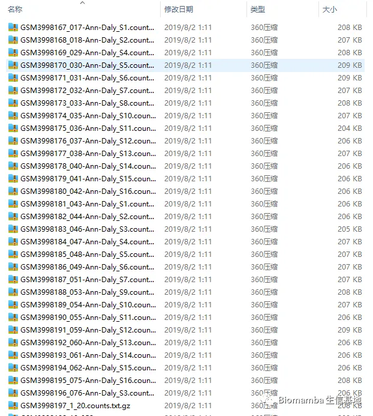

答读者问（九） 如何将数百个文件整合为一个矩阵
原文：https://mp.weixin.qq.com/s?__biz=MzAwMzIzOTk5OQ==&mid=2247485032&idx=1&sn=7d4777589fa1f92d26ad05ffe3e02f6a&chksm=9b3f7f38ac48f62e0d2e4d46a13c21e440295aef4cba08214527d7b7d2e1959a0b4cebe4143a#rd 合集：答读者问
原创 BIOMAMBA Biomamba 生信基地 2022-02-24 10:37
往期回顾
答读者问 （五）如何实现各物种基因的ID/symbol的转换
问题
有粉丝表示自己要分析的bulk-RNA-Seq数据很反人类，所有样本单独存放为一个文件，并且文件数量众多，想要将其整合为单一矩阵。开工！

怎么解决问题
一、整合
myfile.dir <- paste0('GSE135251_RAW/',list.files('GSE135251_RAW/'))#把所有的文件目录列出来
length(myfile.dir)#有两百多个文件，显然不可能给每个文件写一个代码
## [1] 216
myfile.dir[1:10]#看看每个文件长啥样
## [1] "GSE135251_RAW/GSM3998167_017-Ann-Daly_S1.counts.txt.gz"
## [2] "GSE135251_RAW/GSM3998168_018-Ann-Daly_S2.counts.txt.gz"
## [3] "GSE135251_RAW/GSM3998169_029-Ann-Daly_S4.counts.txt.gz"
## [4] "GSE135251_RAW/GSM3998170_030-Ann-Daly_S5.counts.txt.gz"
## [5] "GSE135251_RAW/GSM3998171_031-Ann-Daly_S6.counts.txt.gz"
## [6] "GSE135251_RAW/GSM3998172_032-Ann-Daly_S7.counts.txt.gz"
## [7] "GSE135251_RAW/GSM3998173_033-Ann-Daly_S8.counts.txt.gz"
## [8] "GSE135251_RAW/GSM3998174_035-Ann-Daly_S10.counts.txt.gz"
## [9] "GSE135251_RAW/GSM3998175_036-Ann-Daly_S11.counts.txt.gz"
## [10] "GSE135251_RAW/GSM3998176_037-Ann-Daly_S12.counts.txt.gz"
sample.list <- list.files('GSE135251_RAW/')#把所有文件名列出来
gene.order <- rownames(
read.table(gzfile('GSE135251_RAW/GSM3998167_017-Ann-Daly_S1.counts.txt.gz'),
row.names = 1,sep = '\t'))#先随便读个文件确定一下基因顺序
gene.order[1:5]
## [1] "ENSG00000000003" "ENSG00000000005" "ENSG00000000419" "ENSG00000000457"
## [5] "ENSG00000000460"
myresult <- as.data.frame(gene.order)
for (i in 1:length(myfile.dir)) {
mytemp <- read.table(gzfile(myfile.dir[i]),row.names = 1,sep = '\t')
myresult <- cbind(myresult,mytemp[gene.order,])
colnames(myresult)[i+1] <- sample.list[i]
}
dim(myresult)
## [1] 64258 217
myresult[1:5,1:5]#查看一下合并后的结果
## gene.order GSM3998167_017-Ann-Daly_S1.counts.txt.gz
## 1 ENSG00000000003 2565
## 2 ENSG00000000005 0
## 3 ENSG00000000419 605
## 4 ENSG00000000457 315
## 5 ENSG00000000460 92
## GSM3998168_018-Ann-Daly_S2.counts.txt.gz
## 1 2400
## 2 14
## 3 525
## 4 330
## 5 89
## GSM3998169_029-Ann-Daly_S4.counts.txt.gz
## 1 2391
## 2 0
## 3 709
## 4 329
## 5 115
## GSM3998170_030-Ann-Daly_S5.counts.txt.gz
## 1 2835
## 2 0
## 3 671
## 4 418
## 5 97
rownames(myresult) <- myresult$gene.order
myresult <- myresult[,-1]
myresult[1:5,1:5]
## GSM3998167_017-Ann-Daly_S1.counts.txt.gz
## ENSG00000000003 2565
## ENSG00000000005 0
## ENSG00000000419 605
## ENSG00000000457 315
## ENSG00000000460 92
## GSM3998168_018-Ann-Daly_S2.counts.txt.gz
## ENSG00000000003 2400
## ENSG00000000005 14
## ENSG00000000419 525
## ENSG00000000457 330
## ENSG00000000460 89
## GSM3998169_029-Ann-Daly_S4.counts.txt.gz
## ENSG00000000003 2391
## ENSG00000000005 0
## ENSG00000000419 709
## ENSG00000000457 329
## ENSG00000000460 115
## GSM3998170_030-Ann-Daly_S5.counts.txt.gz
## ENSG00000000003 2835
## ENSG00000000005 0
## ENSG00000000419 671
## ENSG00000000457 418
## ENSG00000000460 97
## GSM3998171_031-Ann-Daly_S6.counts.txt.gz
## ENSG00000000003 3099
## ENSG00000000005 0
## ENSG00000000419 869
## ENSG00000000457 348
## ENSG00000000460 108
二、可以看出，这个文件名是包含了表型信息的，显然这里我们需要把这个表型信息也提取出来
mymetadata <- gsub('.counts.txt.gz','',colnames(myresult))#首先先把后缀去掉
#mymetadata <- gsub('_','\t',colnames(myresult))#首先先把后缀去掉
metadata <- data.frame()
for (i in 1:ncol(myresult)) {
mytemp <- unlist(strsplit(mymetadata[i],'_')[[1]])
metadata <- rbind(metadata,mytemp)
}
colnames(metadata) <- c('ID','Time','Sample')
head(metadata)
## ID Time Sample
## 1 GSM3998167 017-Ann-Daly S1
## 2 GSM3998168 018-Ann-Daly S2
## 3 GSM3998169 029-Ann-Daly S4
## 4 GSM3998170 030-Ann-Daly S5
## 5 GSM3998171 031-Ann-Daly S6
## 6 GSM3998172 032-Ann-Daly S7
#搞定！

如何联系我们
 最近发现后台中有一些消息我没能及时看到并答复，微信后台中超过48h后便不允许回复读者消息，这里还是再给大家留一下答疑的扣扣号，方便大家随时交流。微信号可以点击喜欢作者 后自动回复里有。欢迎大家向我咨询或者提供建议。大家可以阅读完这几篇之后添加我：如何搜索公众号过往发布内容
答疑公约
笑一笑也就算了
最近发现后台中有一些消息我没能及时看到并答复，微信后台中超过48h后便不允许回复读者消息，这里还是再给大家留一下答疑的扣扣号，方便大家随时交流。微信号可以点击喜欢作者 后自动回复里有。欢迎大家向我咨询或者提供建议。大家可以阅读完这几篇之后添加我：如何搜索公众号过往发布内容
答疑公约
笑一笑也就算了